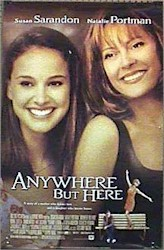

Contents | Features | Reviews | Books | Archives | Store |
 |
|
| Movie Credits | Buy It! |
Anywhere But Here
Review by
Gregory Avery
Posted 12 November 1999
|  |
Directed
by Wayne Wang. Starring
Susan Sarandon, Screenplay
by Alvin Sargent, |
Adele
August (Susan Sarandon), at the wheel of her second-hand Mercedes, is happily
munching junk food while listening to the Beach Boys on the radio, much to the
growing consternation of her teenage daughter Ann (Natalie Portman). Ann finally
turns off the radio and says that she hates the Beach Boys. Adele dumps her out
on the side of the road -- somewhere between desolation and Salt Lake City.
After she drives away, Ann becomes a bit scared -- maybe she's left out there in
the middle of nowhere after all. But, after just long enough for the feeling to
sink in, Adele drives back, and picks her back up in the car after all. It is
the last predictable thing to happen in the movie.
Anywhere
But Here
chronicles how Adele drags Ann from the small town of Bay City, Wisconsin, where
their relatives live, to what is supposed to be a better life for them in
California, most preferably Beverly Hills. Adele will get a job teaching, and
Ann will get to go to school in what Adele things is the best school district in
the country. Of course, there is no job waiting for Adele in California, and she
and Ann end up hopscotching from one apartment to another without ever finding a
permanent place to live or even enough furniture to fill up an apartment. Ann
does get to go to school in Beverly Hills, but Adele is a free-spirit and Ann
comes to loathe how their life never attains some sort of stasis.
Adele
is, along with being impractical and delusional, monstrously selfish, but Susan
Sarandon finds a way to make her appealing without ignoring this fact. The
character she plays seems like a bundle of contradictory traits, at times --
overbearing one moment and giving the next, tangential yet fiercely loving and
loved in return.
The
director Wayne Wang has had a tendency to create films that are dramatically
piecemeal at times, sometimes to good effect (as in Smoke), sometimes not
(as in Chinese Box, his breakneck attempt to create an East-West drama on
location in Hong Kong during the last moments before the mainland Chinese
government assumed control). Wang does have a talent for getting very good work
out of his actors, and that proves to be the case, here, from the lead
performers on down. There's a couple of wonderful scenes with Michael Milhone as
a Beverly Hills patrol cop who just happens to stop Adele during two critical
junctures in the story. And the scenes with Shawn Hatosy, as Ann's young cousin
Benny, show him and Ann horsing-around in such a way that makes one understand
why Ann has left more than a home and a group of people behind when she left Bay
City.
What
this film has trouble doing is finding a way of making us understand why Adele
is conducting her life the way she does, and what holds her and Ann together.
Once Ann approaches high school graduation, she becomes set upon breaking away
and starting a life of her own, like any other normal, healthy young adult. And
Natalie Portman's performance reflects all the yearning and pent-up energy
behind Ann's motivations vividly. Freed from her trussed-up, constraining
appearance as Queen Amidala in The Phantom Menace, Portman shows that she
has become a considerable actress, one who can communicate, intuitively, with an
audience like a laser ray. We see how the relationship between her and Adele
subtly changes from mother-daughter to one of two people on equal footing, and
how Ann's having to assume certain responsibilities too early in life has also
stolen something from her in the process, making her determination all the more
so while tempered by the kind of insight and resolution that comes from coming
home too many nights and flipping the light switch to discover that her mother
has, habitually, forgotten to pay the power bill, again.
The
film ultimately wants us to see that Adele, despite her weaknesses and
inconsistencies, is some sort of indomitable, even admirable, personage -- as
Ann puts it, someone with some force, "some power, and when she dies, the
world will be flat...." Sarandon tries very hard to find the right
emotional tones that would make Adele's many, many moods in the film jive
together, and she never looks like she's trying too hard, becoming too fraught
or too strained in her performance. We come to see why Adele acts stupidly,
foolishly or desperately, and we, almost, take a grudging liking to her,
ourselves. But you can't shake the idea that Adele will more likely be even more
lost on her own than she was when it was just her and Ann, and the film fails to
end on the final, reassuring, triumphal note that it seeks.
Contents | Features | Reviews
| Books | Archives | Store
Copyright © 1999 by Nitrate Productions, Inc. All
Rights Reserved.